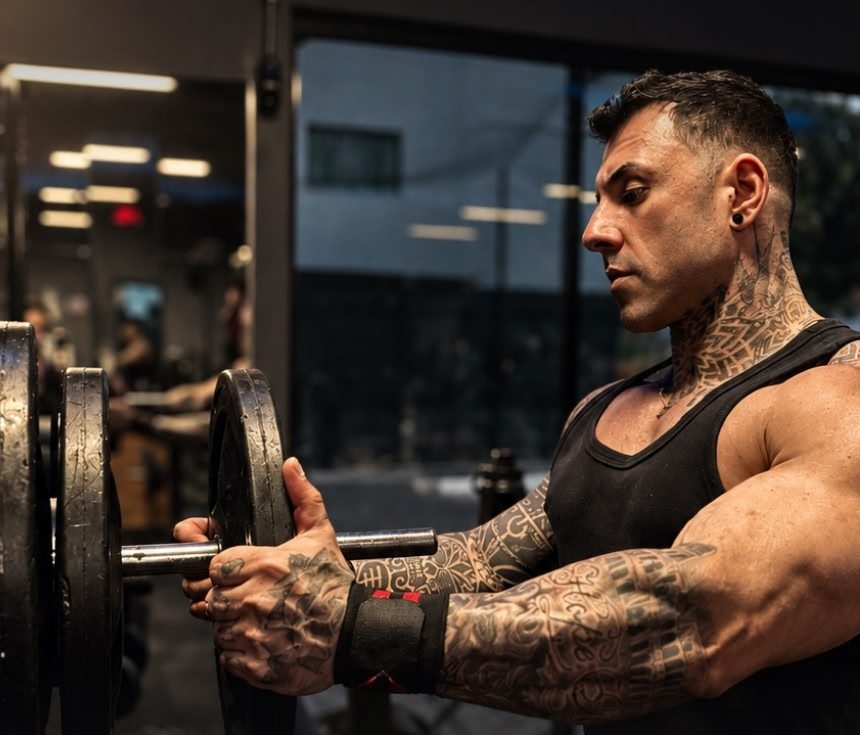

Conquiste o shape dos seus sonhos.
Acompanhamento nutricional individualizado com o Fred, nutricionista esportivo e mais de 15 anos de musculação. Dieta montada com você, retornos e WhatsApp direto. Presencial em Cordeiro e Nova Friburgo ou online para todo o Brasil.
- Dieta montada com você
- Retornos a cada 30 a 40 dias
- WhatsApp direto com o Fred
- Bioimpedância no presencial
Qual é o seu objetivo?
Fazer meu diagnóstico grátis →Diagnóstico grátis, uns 3 minutos.

Quem cuida do seu shape
“Eu não virei nutricionista porque achava bonito. Virei porque precisei.”
Fred Real já brigou com a balança, com o espelho e com dieta que não conseguia manter. Hoje é nutricionista desde 2019, especializado na prática em nutrição esportiva, treina há mais de 15 anos e mostra para 23,6 mil pessoas no Instagram como comer melhor sem neura. Atende em Cordeiro e Nova Friburgo (RJ) e online para todo o Brasil.
@ fredrealnutricionista AntesHoje
AntesHoje
OKVerificado
O que ninguém te conta antes de começar uma dieta
Dieta pronta sai caro.
Parece de graça, mas você paga com semanas de fome, efeito sanfona e a sensação de que "dieta não é pra você". E começa tudo de novo na segunda.
Não é falta de força de vontade.
Na maioria das vezes é um plano que não cabe na sua rotina. Quem não entende o porquê de cada escolha larga no primeiro fim de semana.
Nem todo caso precisa do plano mais longo.
Se o diagnóstico mostrar que uma consulta resolve o seu caso agora, o Fred fala. Melhor perder a venda do que ganhar um paciente frustrado.
efeitosanfona
Plano certo, sem enrolação
Três formatos. A maioria dos pacientes fica com o Semestral. Os valores e as condições o Fred passa direto na conversa pelo WhatsApp.
Qual plano é pro seu objetivo
Normalmente indicamos:
Plano fechado depois do diagnóstico e da conversa com o Fred. Sem compromisso até você decidir.
Fazer o diagnóstico →Quer só uma orientação pontual? Consulta avulsa com o Fred. Ainda pesquisando? Me chama no WhatsApp.
Do primeiro passo ao shape no espelho
Cada etapa tem retorno marcado e alguém do seu lado para ajustar o caminho.

- Hoje
- 1
Diagnóstico
Você conta o seu caso em 3 minutos e vê o plano indicado para o seu objetivo.
- 2
Conversa com o Fred
Ele mesmo responde no WhatsApp, entende o seu caso e explica os planos. Decidiu? A secretária agenda.
- 3
Primeira consulta
De 45 a 90 minutos: rotina, objetivo, avaliação corporal e a dieta montada ali, com você participando.
- 4
Retornos e ajustes
A cada 30 a 40 dias, com ajuste do plano. Entre as consultas, o WhatsApp do Fred para as dúvidas.
- 5
Shape e autonomia
Você evolui no espelho e aprende o porquê de cada escolha, para não depender de dieta pronta nunca mais.
- Shape
Quem já fez o caminho
Pacientes do Fred que autorizaram mostrar a sua evolução. Cada corpo responde de um jeito.
Perguntas que todo mundo faz
Tem dieta de graça na internet. Por que pagar?
Quando o chuveiro queima, você chama alguém que entende, né? Informação tem de sobra; o problema é que ela é genérica, e você não é. No acompanhamento, ela vira estratégia para a sua rotina, o seu treino e o seu histórico, com alguém ajustando o caminho.
Vou ter que parar de comer o que eu gosto?
Não. A dieta é montada com você e leva em conta as suas preferências. Restrição desnecessária é o caminho mais rápido para desistir.
Não tenho tempo para fazer dieta.
Por isso mesmo o plano é feito em cima do seu horário de trabalho, de treino e do que é viável no seu dia a dia. A dieta se adapta à sua rotina, e não o contrário.
Consulta online funciona mesmo?
Funciona. É ao vivo, por vídeo, com a dieta montada durante a chamada. A evolução é acompanhada por fotos e informações que você envia (a bioimpedância é só no presencial), e as dúvidas vão pelo WhatsApp.
Como é o pagamento?
PIX, cartão de crédito, cartão de débito ou dinheiro. As condições de parcelamento são confirmadas no fechamento, depois da conversa com o Fred.
Vou precisar tomar suplemento?
Só se fizer sentido para o seu caso. A suplementação é avaliada individualmente na consulta, quando pertinente.
Atende quem nunca treinou?
Atende. Do sedentário ao marombeiro experiente: o plano parte de onde você está hoje.
Comece pelo diagnóstico
Poucas perguntas e você recebe o plano indicado para o seu caso. Se fizer sentido, você manda o resultado e o Fred te responde no WhatsApp.